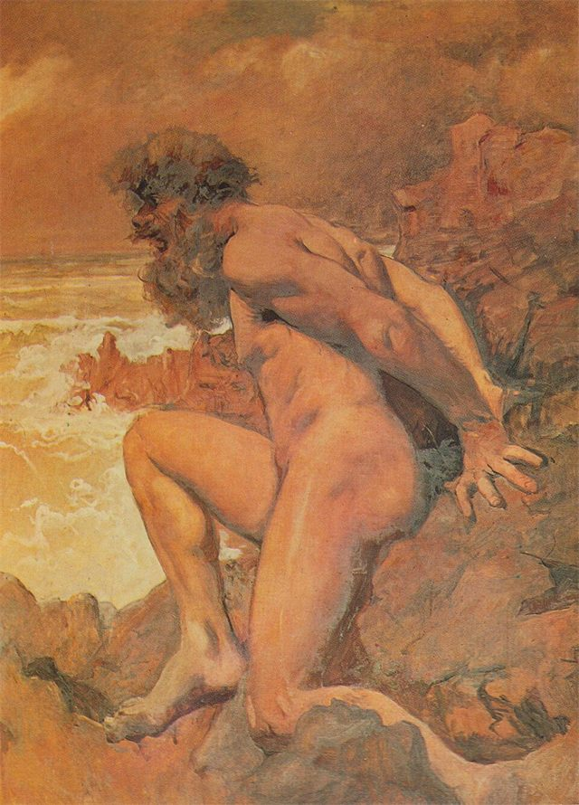

Biblioteca optativa
Movimento Cartaz
O movimento explica uma entrada ou uma mudança de estado. O conteúdo e as ações estão disponíveis desde o início.
A seguir
Experimenta as peças. Esta região permanece sempre parada.
Experimentar peçasNa projeção real, usa ?projetar=1. Sem JavaScript, todos os exemplos mostram o estado final. Os controlos desta página servem apenas a demonstração.
Entrada
Título em sequência
Até quatro palavras ou linhas ganham presença, uma de cada vez. O título nunca desaparece.
180 ms por parte, máximo 720 ms. Versão parada: o mesmo estado final, imediatamente.
Em movimento
Olhar com atenção
Parada
Olhar com atenção
Entrada
Cartaz em sequência
Até quatro blocos entram na sequência de leitura. As ações ficam fora dos blocos que animam.
180 ms por bloco, máximo 720 ms. Versão parada: o mesmo estado final, imediatamente.
Em movimento
Uma pergunta
Que prova tens?
Observa. Compara. Revê.
Parada
Uma pergunta
Que prova tens?
Observa. Compara. Revê.
Entrada
Linha até ao ponto atual
O traço chega à posição já indicada por palavras. A linha nunca é a única indicação do progresso.
350 ms. Versão parada: o mesmo estado final, imediatamente.
Em movimento
1 Feita 2 A seguir 3
Parada
1 Feita 2 A seguir 3
Resposta
Conclusão de um passo
Só acende na passagem de não concluído a concluído. Reabrir a página não produz essa passagem.
250 ms. Versão parada: o mesmo estado final, imediatamente.
Em movimento
Feita 01/11
Parada
Feita 01/11
Resposta
Acerto com prova
O traço confirma a resposta já apresentada. O retorno explica a relação encontrada.
250 ms. Versão parada: o mesmo estado final, imediatamente.
Em movimento
Certo. A repetição sustenta a leitura de monotonia.
Parada
Certo. A repetição sustenta a leitura de monotonia.
Resposta
Pista delimitada
A marca aponta para a pista, sem abanar a resposta nem piscar. A confusão fica escrita.
220 ms. Versão parada: o mesmo estado final, imediatamente.
Em movimento
Relê a pista. Confundiste dimensão com riqueza. Procura as duas palavras que descrevem a cor.
Parada
Relê a pista. Confundiste dimensão com riqueza. Procura as duas palavras que descrevem a cor.
Resposta
Contagem que sobe
O valor final fica escrito desde o primeiro instante. O algarismo auxiliar mostra a passagem de 6 para 7 sem novos anúncios.
550 ms. Versão parada: o mesmo estado final, imediatamente.
Em movimento
7 de 14 concluídos
Parada
7 de 14 concluídos
Resposta
Dobra que abre
A abertura normal acontece primeiro. Só depois o conteúdo ganha presença, sem animar a altura nem mover o resumo.
180 ms. Versão parada: o mesmo estado final, imediatamente.
Em movimento
O que muda nesta leitura?
Uma hipótese precisa de apoio e de um limite. Procura os dois no texto.
Parada
O que muda nesta leitura?
Uma hipótese precisa de apoio e de um limite. Procura os dois no texto.
Resposta
Visor que abre
O visor recebe o foco e a imagem antes da transição. A equipa do visor conserva o comando, o teclado e o fecho.
180 ms. Versão parada: o mesmo estado final, imediatamente.
Em movimento

Parada